| Crelly |
Crelly polishes are a combination of creme and jelly polishes. This means that crelly polishes aren't usually as thick as cream polishes and are found to have glitters or glitter mixed in. |
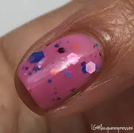 |
| Cream/ Creme |
Cream/ creme polishes are the most basic of all the polish finishes out there. Creams are a basic color and can be found in all colors. |
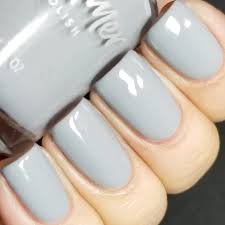 |
| Glitter |
Glitter polishes have small glitters mixed into a jelly base and can be found in all colors. |
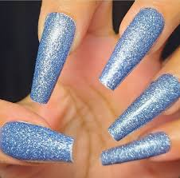 |
| Glow in the Dark |
Glow in the dark polishes that contain pigments that glow in the dark. Some glow in the dark polishes are blacklight activated while others can be activated by any bright light. |
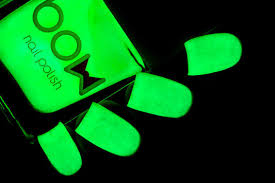 |
| Holographic |
Holographic polishes contain holographic pigments that when exposed to direct sunlight or camera flash, refract rainbows. There are three different types of holographic pigments. The three different types are linear (pictured in the table), scattered and flakie. |
|
| Iridescent |
Iridescent polishes contain pigments or sometimes flakes (as shown in the picture) that change colors but do not run through all the colors of the rainbow like holographic polishes do. |
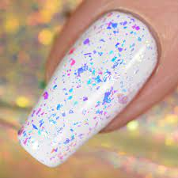 |
| Jelly |
Jelly polishes are intentionally sheer polishes that can be gradually built up to show more or less coverage. Although, most jelly polishes on the market are unable to reach full opacity like cream polishes. |
|
| Magnetic |
Magnetic polishes contain magnetic pigments that can be moved around using a magnet to create unique designs on your nails. |
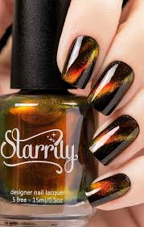 |
| Matte |
Matte polishes are cream polishes that dry down to a matte finish as opposed to a glosst finish. |
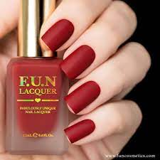 |
| Multichrome |
Multichrome polishes are polishes that change color depending on the angle that you are looking your nails at. Multichromes typically shift between three or more colors. |
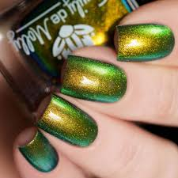 |
| Reflective |
Reflective polishes contain a pigment that when shown in bright direct light or camera flash give a blindingly sparkly appearance. |
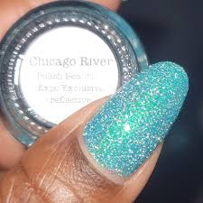 |
| Shimmer |
Shimmer polishes are similar to glitter polishes but are typically made with smaller particle glitters. This allows you to have a more delicate sparkle on your nails. |
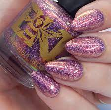 |
| Solar |
Solar nail polishes are polishes that change color when exposed to sunlight. Solar polishes are also known die after a certain period of time leaving the polish to remain in one of the colors it shifts between or somewhere in between. |
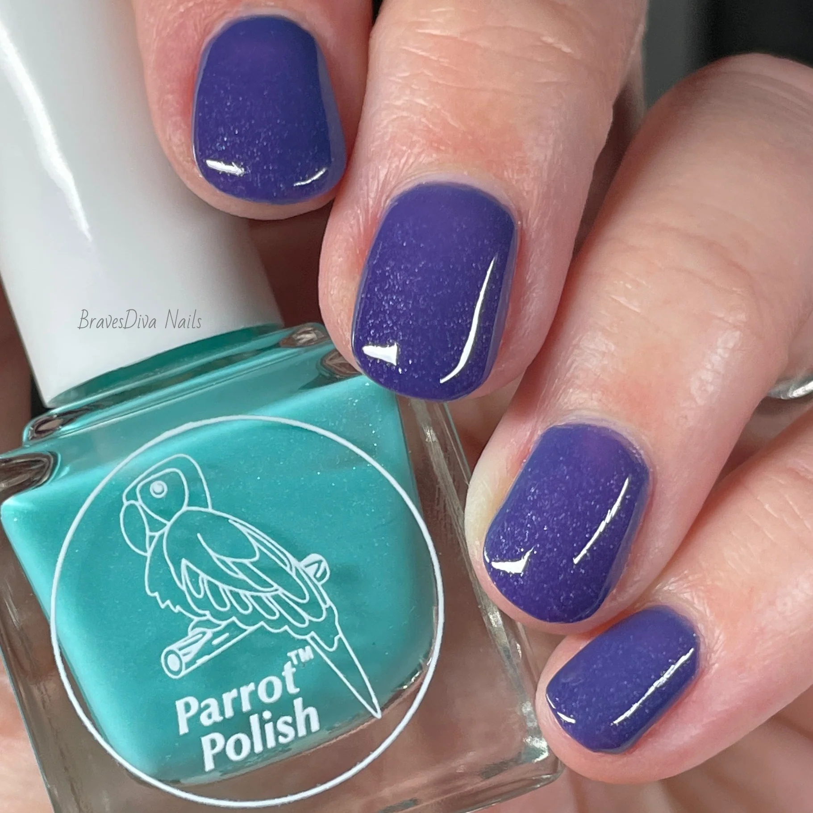 |
| Thermal |
Thermal polishes contain pigments that make them change colors, shifting from a warm state to a cold state. Thermals unfortunately do not last as long as other polishes typically do. The thermal pigments eventually dissolve or die causing the polish to stay in either the cold or warm state or somewhere in between. |
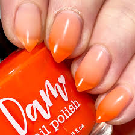 |